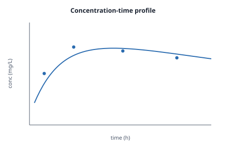

One figure, produced three times
A concentration–time profile for a test compound. Nothing here asks for trust: the bytes re-hash to a recorded output, and three separate parties independently produced the very same bytes. The more independent producers a file has, the harder it is to doubt.

↻3. A figure only one team
made would read ✓ with no counter.A rainbow table of every calculation — what it would cost
Each execution is a file named by its own hash, so the mirror is just static, immutable,
auto-deduplicated blobs. Serving one is the same operation as serving five billion — a content-addressed
GET. There is nothing to "scale": it is a storage problem, and storage of cacheable blobs is
the cheapest thing on the internet. Numbers below are measured from this demo (~1.2 KB per signed record,
~⅓ index overhead) and extrapolated:
Serving unlimited people is essentially free: every object is immutable and addressed by its hash, so it caches perfectly at the network edge — the origin serves each object roughly once per edge, not once per person. A figure seen by one scientist or by ten million costs the same, and identical calculations run anywhere deduplicate to a single stored object. So at this scale a public, verifiable record of a billion reproductions is affordable to a single hobbyist — for the price of a coffee subscription. (The lookup index is ordinary infrastructure, not part of the protocol; the one thing that isn't free is knowing the full set to index — completeness — which lives in the ordered nekton layer, not in this rainbow table.)